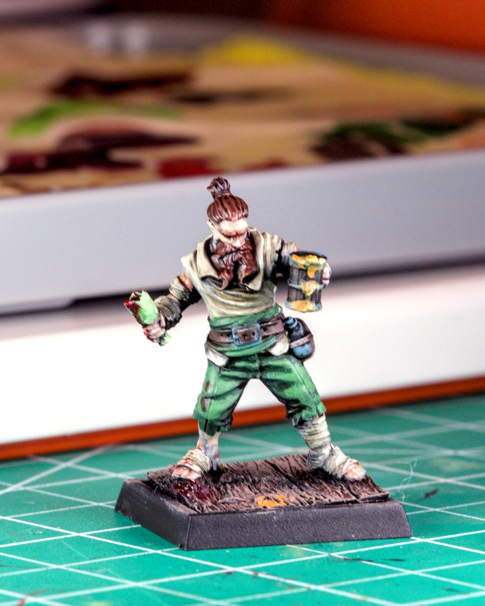
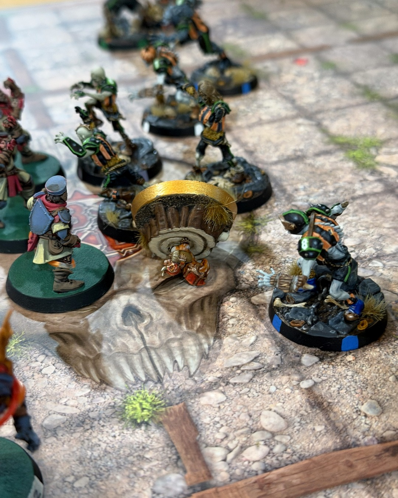
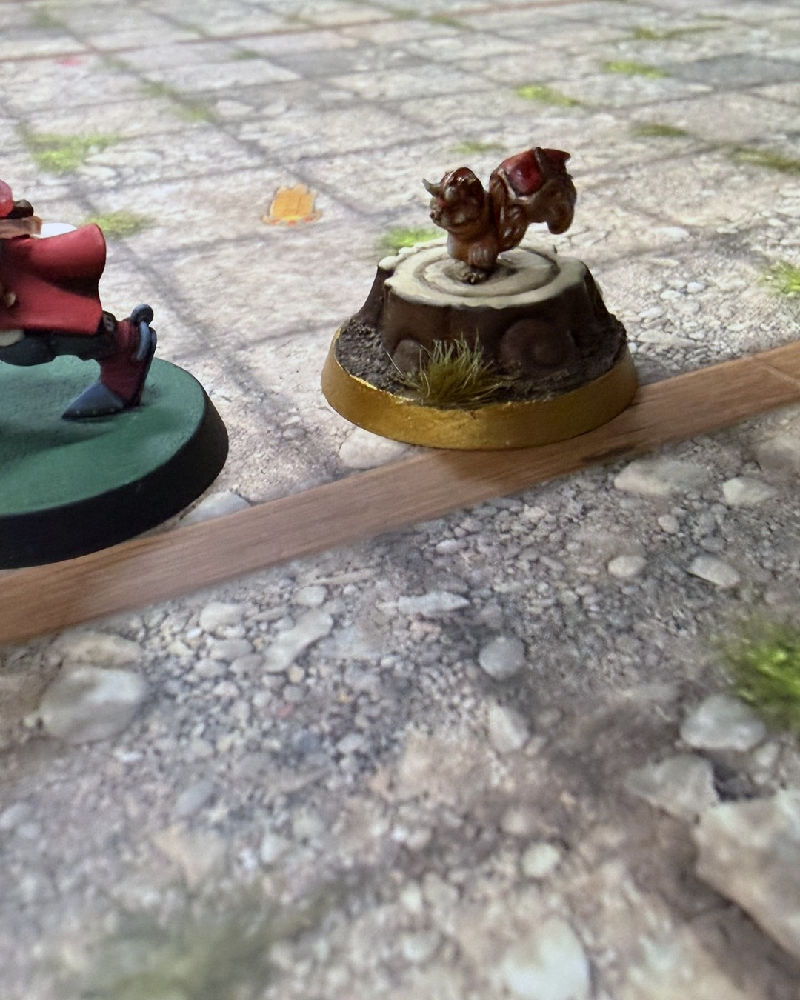
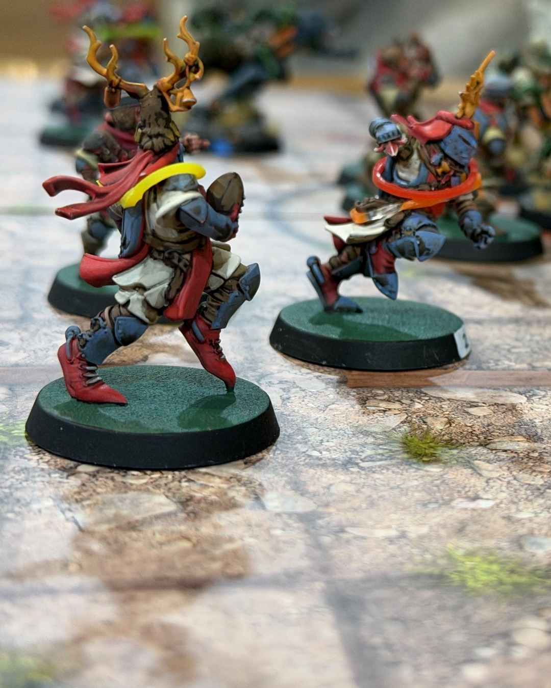

Grenadiers 0–2 Ghouls Just Wanna Have Fun
A squirrel instead of a Viking. 🐿️⚔️
Last game of the regular season, win or go home. This was supposed to be my first ever Star Player: Ivar Eriksson, painted and ready. Then Greg very kindly pointed out I couldn't afford him. Turns out there's a cap on how much treasury you can put toward inducements, a rule I probably should have read. So the Holy Hand Grenadiers took the field with Akhorne the Squirrel and a keg instead.
Honestly, the squirrel was the star of the night. The Ghouls hit him twice early (six block dice and a knockdown), and he just kept standing. He hit the pavement and popped right back up. Later Greg rolled double 1s on the armor. The league Discord decided he must have some Gnome blood in him.
The rest of the team didn't have it so good. Punkin' Head slipped through for the first Ghoul touchdown, then the sun came out (Very Sunny, -1 on every pass) and my passing team never completed a throw. Alejandra got a casualty back, but Fido the Werewolf scored to make it 2–0. MVP for us went to Gracien.
That's the season: 2–5, no playoffs, after a 4 hour 16 minute final game. Big credit to Greg, the Ghouls are a gorgeous team and a tough one. Next season I'm reading the inducement rules first.
@warhammerofficial
#bloodbowl #miniaturepainting #bretonnians #tabletopgaming #warhammercommunity